Section 7.1: Continuous Probability Distributions
Learning Objectives
1.Describe the role of area in finding probability for a continuous random variable.
2.Describe and interpret uniform distributions.
3.Use area to find probability from a uniform distribution.
4.Describe, graph, and interpret a normal distribution.
5.Use the empirical rule to find special probabilities from a normal curve.
In chapter 6 we found probability for discrete random variables. There, we could find the probability that exactly 3 tails would occur if you flipped a coin 5 times, or that there would be 12 successes out of 15 free throw attempts. We now turn to questions about probability for continuous random variables. Sadly, we can’t find probability using the same methods we used for discrete random variables. For instance, it would not make sense to find the probability a randomly selected cookie weighs exactly 4.2 ounces. The weight of cookies is continuous, so there are an infinite number of possible weights. The chance it weighs exactly one of those infinite possibilities (such as 4.2 ounces) is very close to 0. Instead, when we deal with continuous random variables, we find probability for a range of values. For instance, we might find the probability that a cookie weighs between 4.1 and 4.3 ounces. Using an interval of values for the continuous random variable allows us to find probability.
The key to finding probability for continuous random variables is using area.
Example 1: Area and Probability
Assume that you have created a square dartboard with side lengths 1 meter each. If a dart is thrown at the center of the dartboard, it will randomly land somewhere on the dartboard, shown in figure 7.1.
a)What is the probability it lands at the exact center of the dartboard?
b)What is the probability it lands in the shaded region?
c)What is the area of the shaded region?
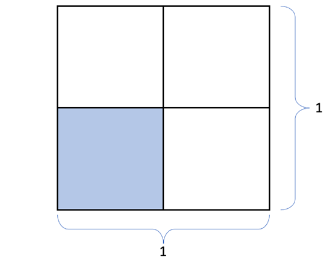
Figure 7.1: A square dartboard.
Solution:a)There are an infinite number of places the dart could land on the dartboard. There is only one center. If we use the definition of probability from chapter 5, we could argue that . In fact, the probability the dart lands in any one spot is effectively zero. That is why we must use regions and intervals instead of specific points to find probability. This is true for any continuous random variable.
b)The dartboard appears to be split into 4 equal regions, so the probability that the dart lands in the shaded region is .
c)Since the shaded region has sides with length ½ meter, we can calculate the area of the square.
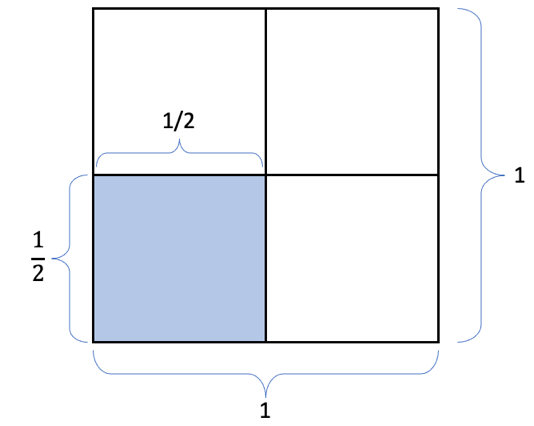
Recall that the area of a rectangle is the length times the width, so the area of the shaded region is .
Is it a coincidence that the area of the shaded region is equal to the probability that the dart lands in the shaded region? No! When the total area of any region is 1, the area of the shaded region represents probability.

Important Point!
We use area of regions to find probability for continuous random variables! When working with continuous random variables, probability can be expressed as a proportion, a percent, or an area.
Definition 1
When X is a continuous random variable, a probability density function (PDF) is a function used to find probability for ranges of values of X. A graph of the probability density function for X satisfies:
•The total area under the graph of the PDF is 1.
•Area of a shaded region is equal to the probability that X occurs in that region.
The Uniform Distribution
There are many different continuous probability distributions. We will only work with a few of them in this book in this and later chapters. The uniform distribution is the easiest of these to understand because the geometry is simple. That makes finding probability as an area a good place to start.
Definition 2
A random variable X has a Uniform Distribution if all outcomes are equally likely.
For example, rolling a six-sided die has 6 equally likely outcomes. The discrete random variable X = the number on the roll is a uniform variable. The probability for each outcome is 1/6, and the probability histogram is shown in figure 7.2. Notice that the histogram looks like a rectangle with all bars the same height. Although this is a discrete variable, continuous random variables have the same shape.
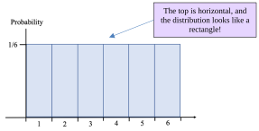

Figure 7.2: Uniform distribution for rolling a six-sided die.
Example 2: Continuous Uniform Random Variable
Bay Area Rapid Transit (BART) is the commuter train service in the San Francisco Bay Area. Commuters use BART trains and can transfer at various stations to Caltrain lines to reach extended destinations not accessible by BART. BART riders who transfer at the Millbrae station must wait between 9 and 16 minutes for their connecting train according to BART statistics. Due to scheduling, the wait time for the connection follows a uniform distribution. Graph the probability density function for X = the wait time for the connecting train.
Photo by Giorgio Trovato (opens in a new tab) on Unsplash (opens in a new tab)
Solution:Since all outcomes are equally likely, the graph of will look like a rectangle. We know wait times are equally likely to occur any time between 9 and 16 minutes. So, the base of the rectangle is
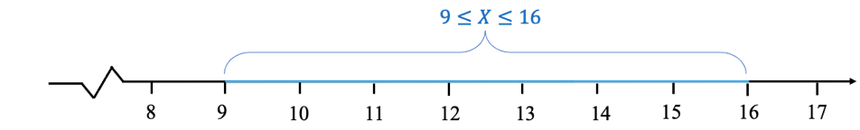
Next, we add the vertical probability axis. We draw in the rectangle, but now we must find the height, or probability.
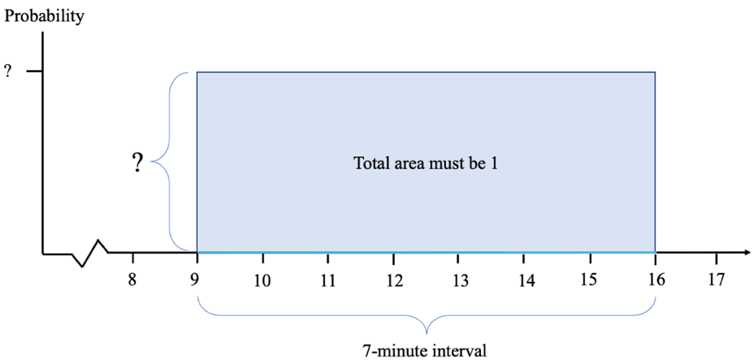
Since the area of the entire region is a rectangle, and the area of the rectangle must be 1, we know that the length of the base multiplied by the height must be 1. Since the base is 7 minutes, the height must be 1/7. The completed uniform distribution is shown in figure 7.3.
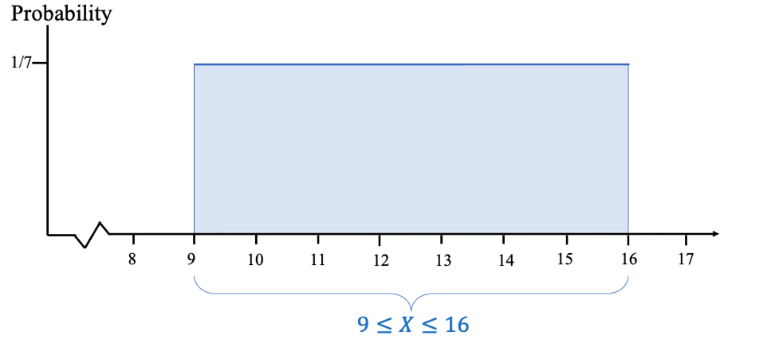
Figure 7.3: Uniform distribution for commuter wait times.
Example 3: Continuous Uniform Random Variable
Use the uniform distribution from example 2 to find each of the following probabilities.
a)What is the probability that a commuter will wait between 9 and 12 minutes?
b)What is the probability that a commuter will wait more than 10 minutes?
c)What is the probability that a commuter will wait longer than 15 minutes?
d)What is the probability that a commuter will wait between 10 and 15 minutes?
Solution:a)To find the probability that the commuter waits between 9 and 12 minutes, we find the area of the distribution between 9 and 12. The base of the shaded rectangle is 12 – 9 = 3 and the height is 1/7. So, . See figure 7.4.
Interpretation: A commuter will wait between 9 and 12 minutes about 42.9% of the time.
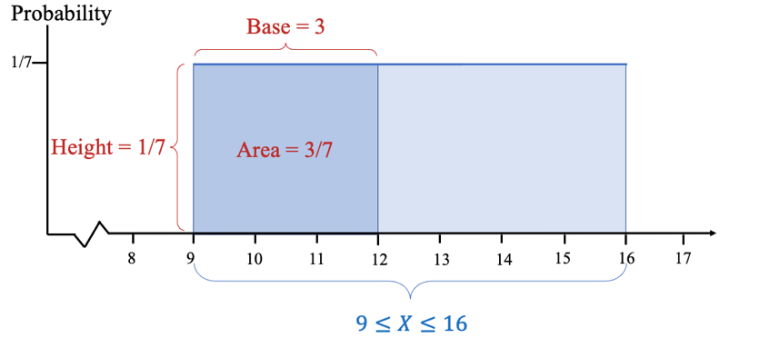
Figure 7.4: The probability a commuter waits between 9 and 12 minutes.
b)To find the probability that the commuter waits longer than 10 minutes, we find the area of the distribution between 10 and 16. The base is 16 – 10 = 6 in this case. So, . See figure 7.5.
Interpretation: A commuter will wait longer than 10 minutes about 85.7% of the time.
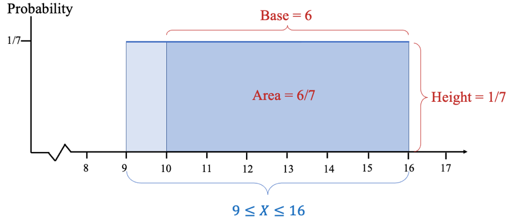
Figure 7.5: The probability a commuter waits longer than 10 minutes.
Notice that the probability . The probability that X = 10 is zero because X is continuous, so we don’t have to be concerned about the difference between “greater than” and “greater than or equal to”.
c)To find the probability that the commuter waits longer than 15 minutes, we find the area of the distribution between 15 and 16. The base is 16 – 15 = 1 in this case. So, . See figure 7.6.
Interpretation: A commuter will wait longer than 15 minutes about 14.3% of the time.
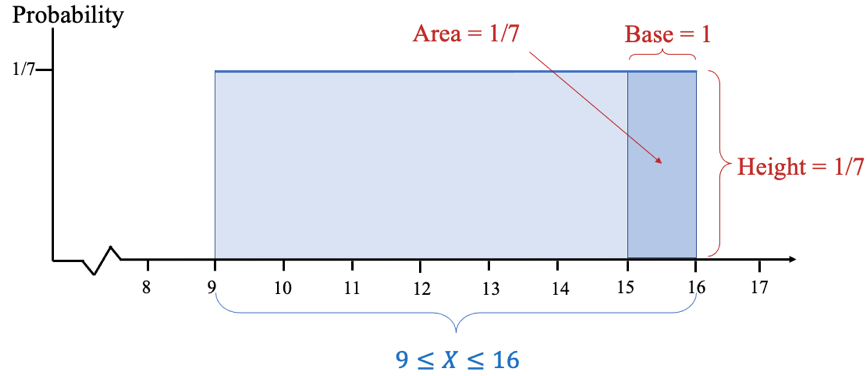
Figure 7.6: The probability a commuter waits longer than 15 minutes.
d)To find the probability that the commuter waits between 10 and 15 minutes, we find the area of the distribution between 10 and 15. The base is 15 – 10 = 5 and the height is still 1/7. So, . See figure 7.7.
Interpretation: A commuter will wait between 10 and 15 minutes about 71.4% of the time.
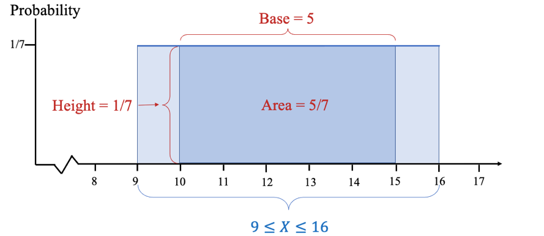
Figure 7.7: The probability a commuter waits between 10 and 15 minutes.
The key point to remember is that we are using area to represent probability! But can we use technology to find probability for a uniform distribution? Sure! We will use STATBELT Utility- the Statistical Basics Exploratory Learning Tool (opens in a new tab).
STATBELT Utility- Probability for Uniform Distributions
To use STATBELT Utility to find probability for a uniform distribution.
1.Select Calculators → Uniform Distribution Calculator.
2.Type the minimum and the maximum of the range for the uniform distribution.
3.Under “Find,” choose the inequality you need and type the value of a.
•Choose “P(X < a)” or “P(X > a)” for one value.
•Choose “P(a < X < b)” to calculate a probability between two values.
4.The probability and a graph appear as soon as you type. There is no button to click.
The calculator gives the probability and shows the probability distribution with the probability shaded as area. Click “Open graph in a new window” to see a larger graph.
Example 4: Continuous Uniform Random Variable with STATBELT!
Use the uniform distribution from example 2 to find each of the following probabilities.
a)What is the probability that a commuter will wait less than 12 minutes?
b)What is the probability that a commuter will wait more than 10 minutes?
c)What is the probability that a commuter will wait between 10 and 15 minutes?
Solution:First, open STATBELT Utility. Then select Calculators → Uniform Distribution Calculator. Since the wait times are between 9 and 16 minutes, type 9 for the “Minimum of the range” and 16 for the “Maximum of the range.”
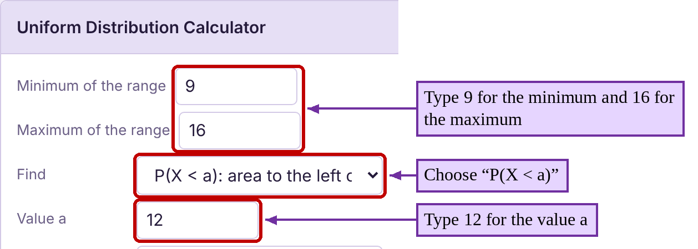
a)To find the probability that the commuter waits less than 12 minutes, choose “P(X < a)” under “Find” and type 12 for the value a. The result is the same as example 3 part (a).
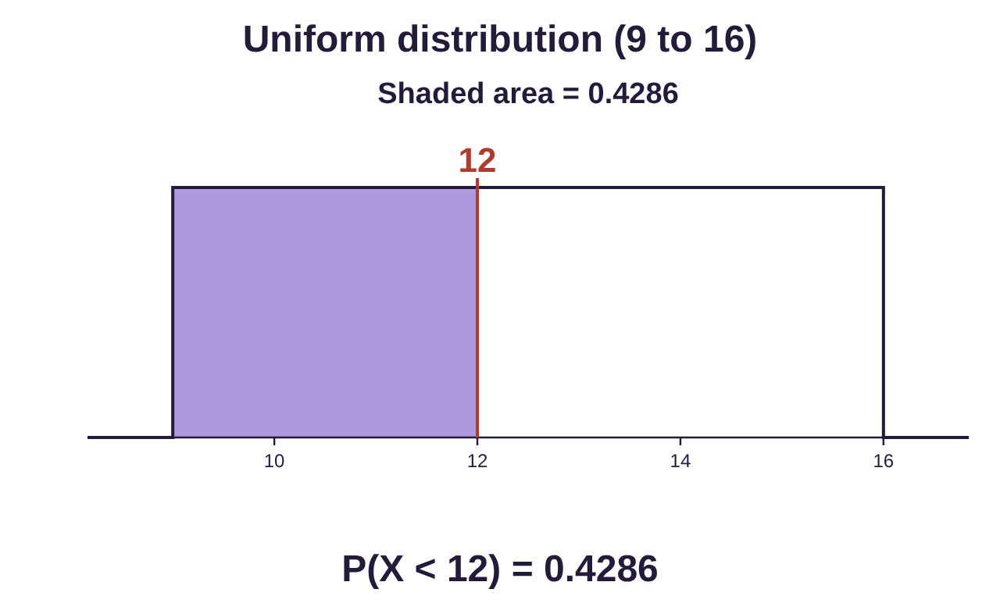
b)To find the probability that the commuter waits more than 10 minutes, choose “P(X > a)” and type 10 for the value a. The result is the same as example 3 part (b).
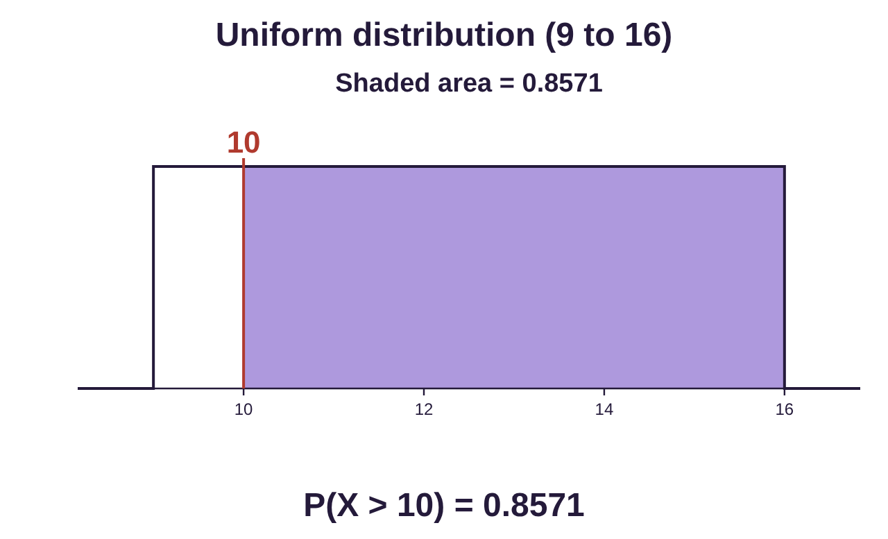
c)To find the probability that the commuter waits between 10 and 15 minutes, choose “P(a < X < b)” and type 10 for the lower value a and 15 for the upper value b. The result is the same as example 3 part (d).
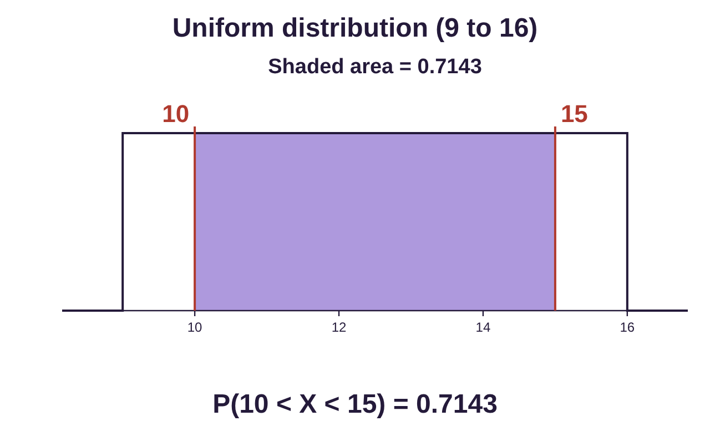
The Normal Distribution
The normal distribution, also called the Gaussian distribution after Carl Friedrich Gauss, is the fancy name for what we have been calling the “bell-shaped curve”. Unlike the uniform distribution, finding area from a normal distribution is very complicated. Probability from a normal distribution requires the use of multivariable calculus to compute. So, we will instead discuss the properties of the normal distribution but use technology to compute probability for normal random variables (in section 7.2).
Normal distributions are determined by their mean and standard deviation. They are always centered and are symmetric about their mean. The standard deviation will determine whether the distribution is taller and less spread out or shorter and more widely spread. See figure 7.8 for three normal curves with the same mean , but with different standard deviations. Note that the distribution with the smallest standard deviation ( gives the tallest, narrowest normal curve. The distribution with the largest standard deviation ( has the shortest and widest normal curve.
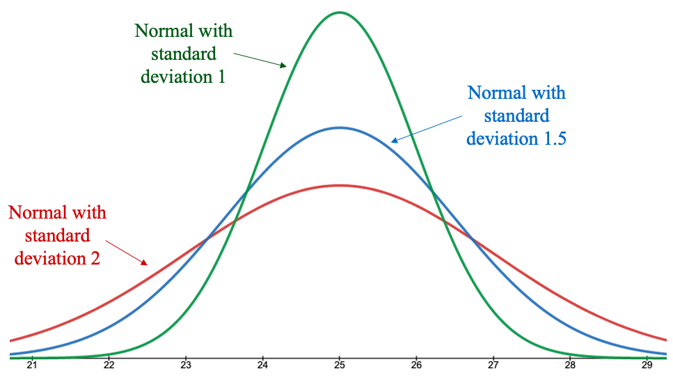
Figure 7.8: Normal distributions with mean 25 and standard deviations 1, 1.5, and 2.
All normal distributions have certain characteristics in common.
Properties of the Normal Distribution
All Normal Distributions share the following properties:
•They are unimodal and symmetric about the mean.
•The horizontal axis is a horizontal asymptote.
•One standard deviation to the right of the mean, and one standard deviation to the left of the mean are inflection points (studied in calculus).
•The total area under the curve is exactly 1.
• is the area under the curve between x = a and x = b.
•The function that gives the curve is given by . You will NEVER need to use this! We will use technology instead!
•The empirical rule for bell-shaped data:
◦The area within one standard deviation of the mean is about 0.68
◦The area within two standard deviations of the mean is about 0.95
◦The area within three standard deviations of the mean is about 0.997.
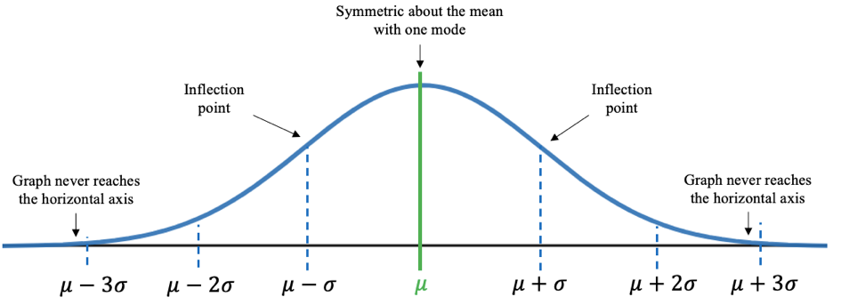
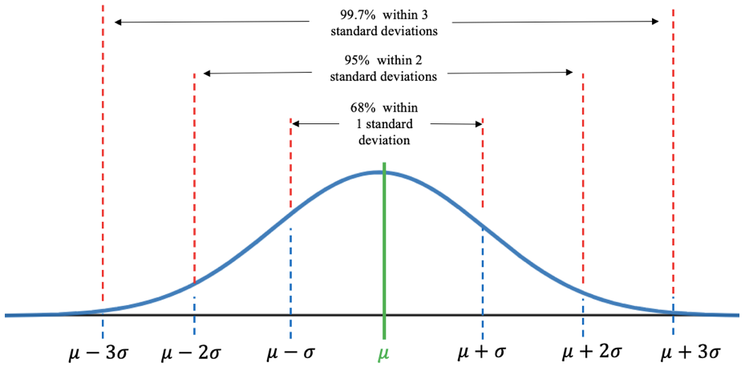
Figure 7.9: Normal distribution characteristics.
As we move into section 7.2, we won’t need to use the empirical rule to estimate probability. It does, however, help us to visualize the probability that we find using area.
Example 5: Drawing a Normal Distribution
Consumers in the U.S. replace their cell phones every 2.8 years, on average, according to statista.com. Let x = the replacement time, or lifespan, of a cell phone. The mean of x is 2.8 years. Assume that the standard deviation for replacements is 1.1 years and that replacement times are normally distributed. Draw a normal curve for this situation.
Solution:a)Start with a generic bell-shaped graph and mark the mean right down the middle. Mark the inflection points, which are a little higher than “halfway down” the hill on each side. The inflection points are one standard deviation above and below the mean.
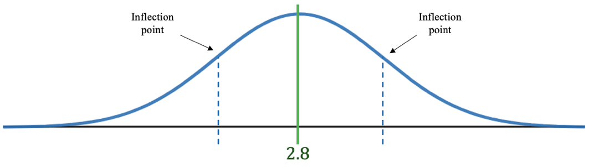
Since the standard deviation is , subtract 1.1 from the mean 2.8, and add 1.1 to the mean 2.8. These are the values one standard deviation below and above the mean.
One standard deviation below:
One standard deviation above:
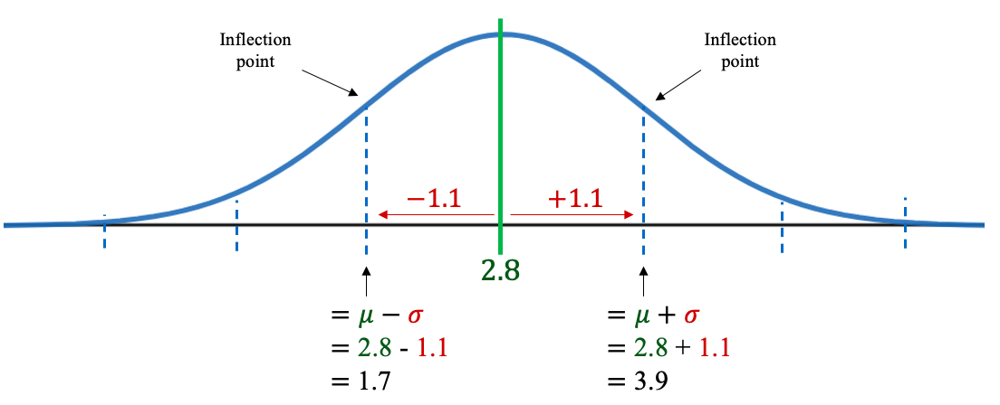
Next, mark off another 1.1 going to the left and another 1.1 going to the right. These tick marks are two standard deviations below the mean and two standard deviations above.
Two standard deviations below:
Two standard deviations above:
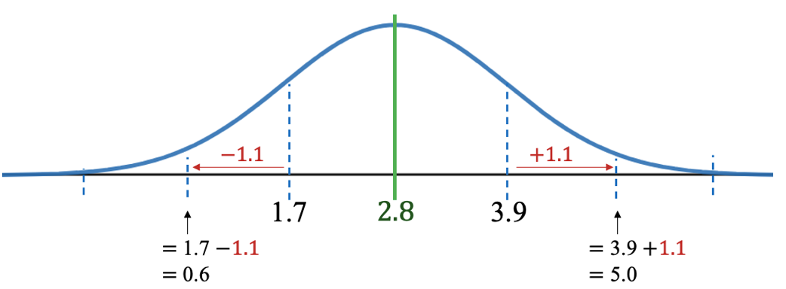
To get to three standard deviations above and below, mark off another 1.1 going to the left and another 1.1 going to the right. These tick marks are three standard deviations below the mean and three standard deviations above.
Three standard deviations below:
Three standard deviations above:
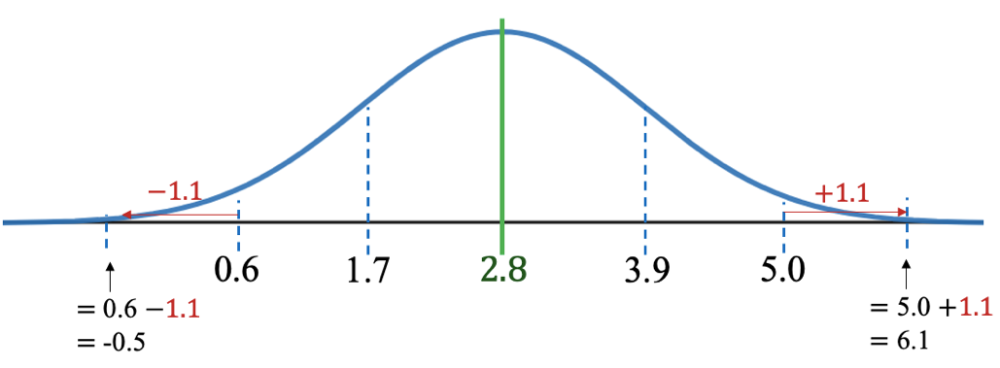
The final version of the normal probability density function with mean 2.8 and standard deviation 1.1 is shown in figure 7.10.
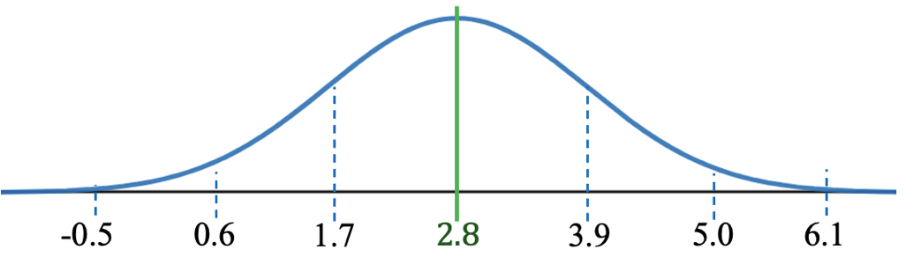
Figure 7.10: Normal distribution with mean 2.8 and standard deviation 1.1.
Example 6: A Normal Distribution with Unknown Mean and Standard Deviation
Find the mean and standard deviation from the graph of the normal random variable shown in figure 7.11.
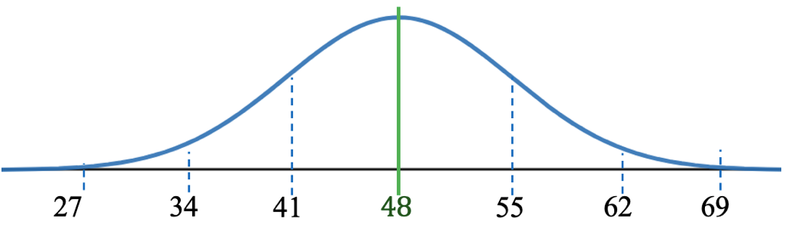
Figure 7.11: Normal distribution with unstated mean and standard deviation.
Solution:The mean is the value in the center of the normal curve, so in this case, the mean is . The inflection points are marked at 55 and 41. 55 – 48 = 7, and 48 – 41 = 7, so the standard deviation is .
Example 7: A Normal Distribution with Unknown Mean and Standard Deviation
Find the mean and standard deviation from the graph of the normal random variable shown in figure 7.12.
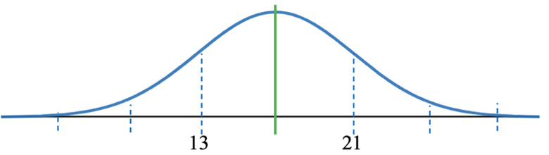
Figure 7.12: Normal distribution with unknown parameters.
Solution:The mean is the value in the center of the normal curve, but in this example, it is not marked. Fortunately, the values at the inflection points are marked at 13 and 21. Since the normal distribution is symmetric, the mean must be exactly halfway between these values. In other words, the mean is the average of 13 and 21. So, . Since 17 is 4 units above 13 and 4 units below 21, the standard deviation is . Conclusion: The mean is and the standard deviation is See figure 7.13.
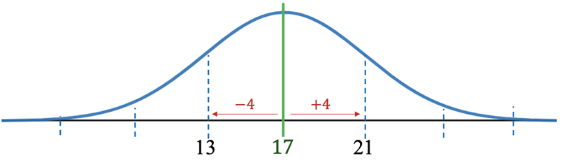
Figure 7.13: Normal distribution with mean and standard deviation.
Example 8: A Normal Distribution and the Empirical Rule.
Use the normal distribution from example 5 to estimate each probability using the empirical rule.
Consumers in the U.S. replace their cell phones every 2.8 years, on average, according to statista.com. Let x = the replacement time, or lifespan, of a cell phone. The mean of X is 2.8 years. Assume that the standard deviation for replacements is 1.1 years and that replacement times are normally distributed.
a)Use the empirical rule to estimate the probability that a cell phone lasts between 1.7 and 3.9 years.
b)Use the empirical rule to estimate the probability that a cell phone lasts between 2.8 and 5.0 years.
c)Use the empirical rule to estimate the probability that a cell phone lasts longer than 5 years.
Solution:First, figure 7.14 is the normal curve we created in example 5 with the empirical rule percentages noted on the top.
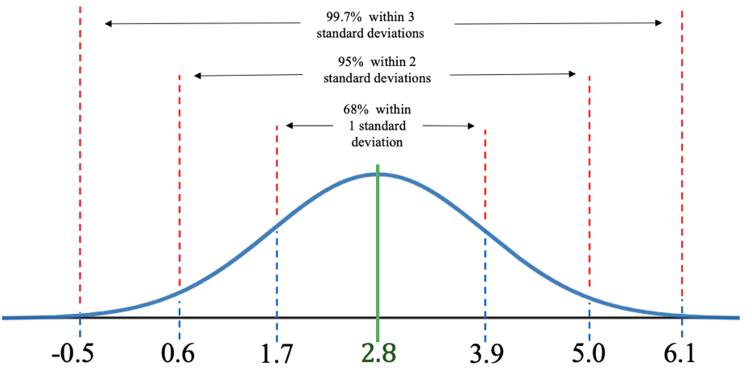
Figure 7.14: Normal distribution for cell phone replacement times.
Photo by Neil Soni (opens in a new tab) on Unsplash (opens in a new tab)
a)The probability that a cell phone lasts between 1.7 and 3.9 years before replacement is
, shaded in figure 7.15. Since the interval 1.7 to 3.9 is one standard deviation below the mean to one standard deviation above the mean, the area is approximately 0.68 (or 68%). Since probability is equal to area, we know that
So, the probability that a randomly selected cell phone will have a replacement time between 1.7 and 3.9 years is approximately 0.68. Alternatively, about 68% of cell phones are replaced between 1.7 and 3.9 years after purchase.
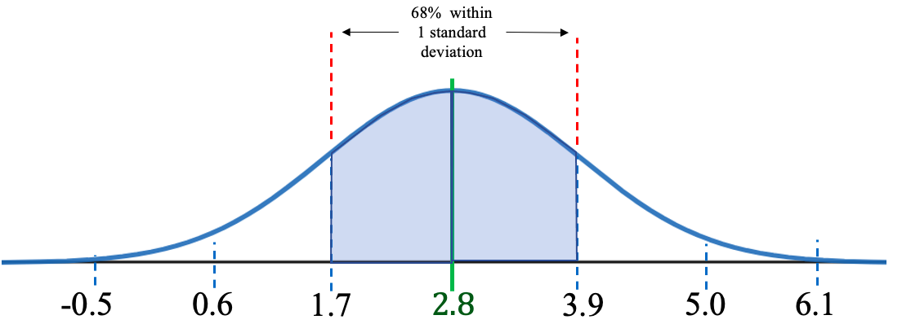
Figure 7.15: Normal distribution for cell phone replacement times, .
b)The probability that a cell phone lasts between 2.8 and 5.0 years before replacement is
. This is approximately half of the total area within two standard deviations of the mean.
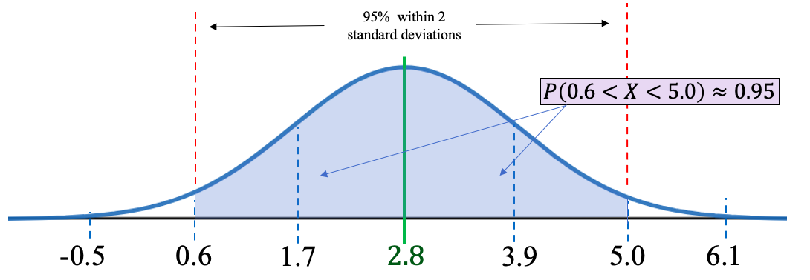
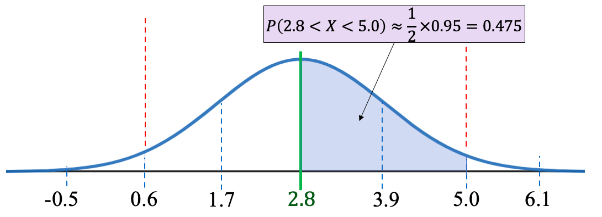
Figure 7.16: Normal distribution for cell phone replacement times, .
We know , but we only want the right half of this probability. So, the probability we need is . See figure 7.16.
So, about 47.5% of cell phones are replaced between 2.8 ad 5.0 years after purchase. You can also interpret the result as the probability that one randomly selected cell phone is replaced between 2.8 and 5.0 years is approximately 0.475.
c)The probability that a cell phone lasts longer than 5.0 years before replacement is
, which is darkly shaded in figure 7.17. Since the total area under the normal curve is 1, half of the area is to the right of the mean. We can use subtraction to find the probability that the replacement time is more than 5 years.
The probability we calculated in part (b) is , lightly shaded in figure 7.17. The area of the dark shaded portion is the area of the right half of the distribution minus the area that is lightly shaded, or . So, there is about a 2.5% chance that a cell phone will last longer than 5 years before it is replaced.
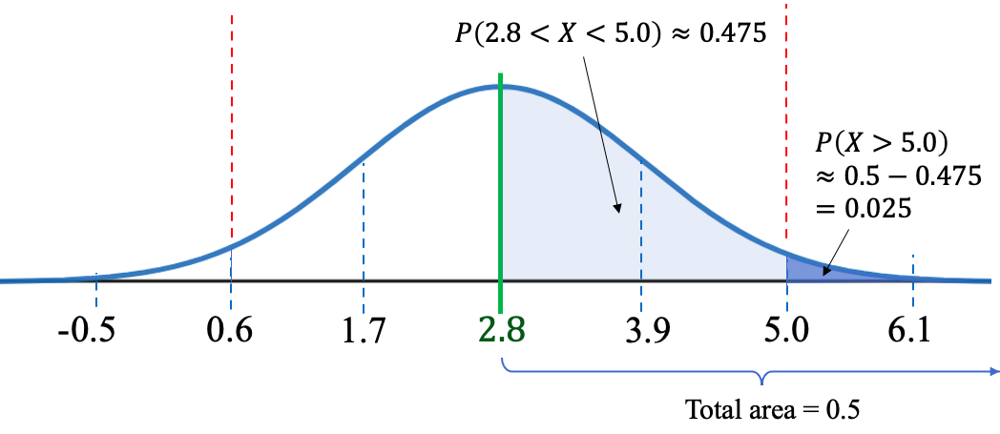
Figure 7.17: Normal distribution for cell phone replacement times, .
Finding probability for a normal distribution using the empirical rule is very limited. For example, if we wanted to find the probability that a cell phone is replaced between 1 and 2 years, the empirical rule doesn’t help because 1 and 2 are not among the increments we marked on the curve. We will use technology to find the probability for this and most other situations. That will be covered next in section 7.2.